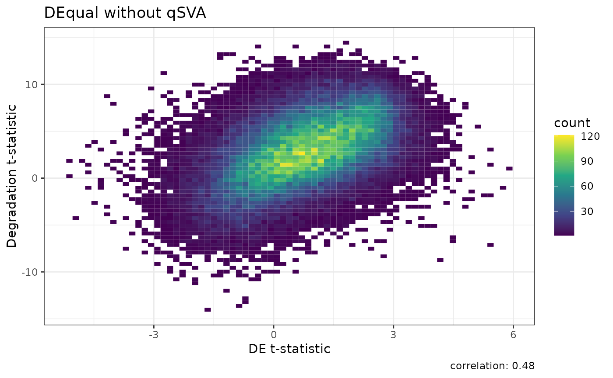
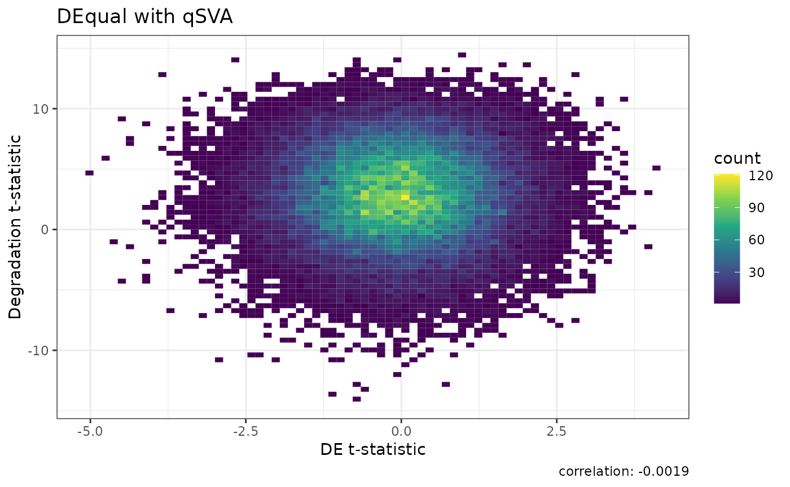

Differential Expression Analysis using Limma and qsvaR
Hedia Tnani
Lieber Institute for Brain Development, Johns Hopkins Medical Campushediatnani0@gmail.com
Joshua M. Stolz
Lieber Institute for Brain Development, Johns Hopkins Medical Campusjstolz80@gmail.com
Louise A. Huuki-Myers
Lieber Institute for Brain Development, Johns Hopkins Medical Campuslahuuki@gmail.com
Leonardo Collado-Torres
Lieber Institute for Brain Development, Johns Hopkins Medical Campuslcolladotor@gmail.com
27 July 2023
Source:vignettes/qsvaRPkgDemo.Rmd
qsvaRPkgDemo.RmdIntroduction
Postmortem brain tissue is a valuable resource for studying the human brain and understanding various neurological and psychiatric disorders. However, the quality of postmortem brain tissue can be significantly affected by degradation, which can occur due to various factors such as the time elapsed since death (postmortem interval), the conditions in which the body was stored, and the method of tissue preservation.
Therefore, it’s crucial to remove or at least minimize the effect of degradation in postmortem brain tissue to ensure the accuracy and reliability of research findings. This can be achieved through various methods, such as optimizing the conditions for tissue storage and preservation, using appropriate controls, and using statistical methods to correct for the effects of degradation.
This method has been described in the initial qSVA framework paper (Jaffe et al., 2017).
This is a basic example which shows how to obtain the quality surrogate variables (qSVs) for BrainSeq Phase 2.
Time Outline
| Activity | Time |
|---|---|
| Introduction to qsvaR (slides) | 10m |
| Data overview | 5m |
| Limma and qsvaR | 20m |
Total: a 35 minute session.
Workshop goals
During the workshop, we will provide a step-by-step explanation of the qsvaR and apply it to BrainSeq Phase 2 dataset. We will describe how using qsvaR can improve the reproducibility of differential expression analyses across datasets.
BrainSeq Phase 2 Dataset
For illustrative purposes, we’ll use the BrainSeq Phase 2 data at the transcript level (Collado-Torres et al., 2019). This dataset is RiboZero RNA-seq data for 900 samples across both the dorsolateral prefrontal cortex (DLPFC) and the hippocampus (HIPPO) for 551 individuals (286 affected by schizophrenia disorder: SCZD) . Visit here for more details.
Load the data
The BrainSeq Phase 2 data at the transcript level resides in a
RangedSummarizedExperiment (RSE) object called
rse_tx. It has been obtained after running the
SPEAQeasy pipeline. To have a better understanding of how
the pipeline works please attend the workshop that will be presented by
Lieber collegues at the BioC2023.
options(timeout = 400)
## Load the rse_tx object
load(url("https://s3.us-east-2.amazonaws.com/libd-brainseq2/rse_tx_unfiltered.Rdata"), verbose = TRUE)
#> Loading objects:
#> rse_tx
## General overview of the object
rse_tx
#> # A SummarizedExperiment-tibble abstraction: 178,283,700 × 900
#> # Features=198093 | Samples=900 | Assays=tpm
#> .feature .sample tpm SAMPLE_ID FQCbasicStats perBaseQual perTileQual
#> <chr> <chr> <dbl> <list> <list> <list> <list>
#> 1 ENST0000045632… R10424 0 <chr [1]> <chr [1]> <chr [1]> <chr [1]>
#> 2 ENST0000045030… R10424 0 <chr [1]> <chr [1]> <chr [1]> <chr [1]>
#> 3 ENST0000048814… R10424 2.36 <chr [1]> <chr [1]> <chr [1]> <chr [1]>
#> 4 ENST0000061921… R10424 0 <chr [1]> <chr [1]> <chr [1]> <chr [1]>
#> 5 ENST0000047335… R10424 0 <chr [1]> <chr [1]> <chr [1]> <chr [1]>
#> 6 ENST0000046928… R10424 0 <chr [1]> <chr [1]> <chr [1]> <chr [1]>
#> 7 ENST0000060709… R10424 0 <chr [1]> <chr [1]> <chr [1]> <chr [1]>
#> 8 ENST0000041732… R10424 0 <chr [1]> <chr [1]> <chr [1]> <chr [1]>
#> 9 ENST0000046146… R10424 2.96 <chr [1]> <chr [1]> <chr [1]> <chr [1]>
#> 10 ENST0000060685… R10424 0 <chr [1]> <chr [1]> <chr [1]> <chr [1]>
#> # ℹ 40 more rows
#> # ℹ 79 more variables: perSeqQual <list>, perBaseContent <list>,
#> # GCcontent <list>, Ncontent <list>, SeqLengthDist <list>,
#> # SeqDuplication <list>, OverrepSeqs <list>, AdapterContent <list>,
#> # KmerContent <list>, percentGC_R1 <list>, phred100_R1 <list>,
#> # phredGT30_R1 <list>, phredGT35_R1 <list>, Adapter88_R1 <list>,
#> # percentGC_R2 <list>, phred100_R2 <list>, phredGT30_R2 <list>, …This is a SummarizedExperiment object but it is
evaluated as a tibble. So it is fully compatible both with
SummarizedExperiment and tidyverse APIs.
Background
SummarizedExperiment
The SummarizedExperiment package contains two classes:
SummarizedExperiment and
RangedSummarizedExperiment.
RangedSummarizedExperiment is a subclass of the
SummarizedExperiment class, meaning it inherits all the features and
functionalities of its parent class.
Note: The primary difference is that the rows of a
RangedSummarizedExperiment object represent genomic ranges
of interest, rather than a DataFrame of features.
RangedSummarizedExperiment objects use a
GRanges or GRangesList object to represent
genomic ranges. These objects store information about genomic
coordinates, genomic features, and annotations for the ranges of
interest. The rowRanges() function allows you to access and
manipulate the GenomicRanges information within a
RangedSummarizedExperiment object.
The following graphic displays the class geometry and highlights the vertical (column) and horizontal (row) relationships.

RangedSummarizedExperiment
Sample Information
The sample information in colData(rse_tx) contains the
following main variables:
SAMPLE_ID: is the name of the sample.ERCCsumLogErr: a summary statistic quantifying overall difference of expected and actual ERCC concentrations for one sample.numReads: Total number of reads in fastq file.numMapped: Number of reads that were aligned by HISAT2 to the reference genome.numUnmapped: Number of reads that did not align to the reference genome.overallMapRate: Proportion of total reads mapped (numMapped / numReads).concordMapRate: If library is paired-end, percentage of read pairs that mapped concordantly.overallMapRate: the decimal fraction of reads which successfully mapped to the reference genome (i.e.numMapped/numReads).totalMapped: the number of reads which successfully mapped to the canonical sequences in the reference genome (excluding mitochondrial chromosomes).mitoMapped: the number of reads which successfully mapped to the mitochondrial chromosome.mitoRate: the decimal fraction of reads which mapped to the mitochondrial chromosome, of those which map at all (i.e.mitoMapped/ (totalMapped+mitoMapped)).totalAssignedGene: the decimal fraction of reads assigned unambiguously to a gene (including mitochondrial genes), with featureCounts of those in total.rRNA_rate: the decimal fraction of reads assigned to a gene whose type is ‘rRNA’, of those assigned to any gene.RNum: is the identifier for the RNAseq experiment and is related to the Sample ID.BrNum: stands for Brain Number. It likely refers to a unique identifier assigned to each brain (or brain sample) examined in the study.Region: refers to a specific region of the brain from which the sample was taken.RIN: refers to RNA Integrity Number. It’s a measure of the quality of the RNA samples used in the study. A higher RIN indicates higher quality, and thus more reliable, RNA.Age: refers to the age of the donors from which the samples were taken.Sex: refers to the sex of the donors from which the samples were taken. if the sample comes from a female (F) or a male (M) donor.Race: refers to the race of the donors from which the samples were taken.Dx: refers to the diagnosis of the donors from which the samples were taken.
Data normalization
We would like to use the Transcripts Per Million (TPM)
or tpm data. The rse_tx object contains the
following tpm normalized assays:
assays(rse_tx)tpm: normalized read counts of the 19,8093 genes across
900 samples.
Note: Transcripts Per Million (TPM) is
a normalization method for RNA-seq data that facilitates comparisons
both within and between samples. It adjusts for gene length
and sequencing depth, making it a helpful measure for
relative gene expression.
There are many ways to access the tpm data. Below some
of them:
# Extract the first element from the list of assays in the SummarizedExperiment object
# This assumes that the first element in the list of assays is the one you are interested in
assays(rse_tx) %>% extract2(1)
# Another way of extracting the first element from the list of assays in the SummarizedExperiment object
# Here, 'tpm' is assumed to be the name of the first assay
assays(rse_tx)$tpm
# Yet another way of extracting the first element from the list of assays in the SummarizedExperiment object
# The simplify() function tries to simplify the result to a vector or matrix if possible
# The first() function extracts the first element of the simplified result
assays(rse_tx) %>%
simplify() %>%
first() %>%
head()Data distribution
Let’s have a look at the distribution of the tpm assay.
Before we have to reformat the data as follows:
options(timeout = 400)
# Transform 'tpm' data to a long format with 'Transcript', 'Sample', and 'TPM' columns
tpm_tb <- log2(assays(rse_tx)$tpm + 0.5) %>%
as.data.frame() %>%
rownames_to_column(var = "Transcript") %>%
pivot_longer(
cols = -Transcript,
names_to = "Sample",
values_to = "TPM"
)
# Extract 'RNum', 'Region', and 'Dx' from 'rse_tx', convert to tibble
colData_tb <- colData(rse_tx) %>%
as.data.frame() %>%
dplyr::select(RNum, Region, Dx) %>%
as_tibble()
# Join 'tpm_tb' with 'colData_tb' based on 'Sample' and 'RNum'
tpm_tb <- tpm_tb %>%
dplyr::left_join(colData_tb, by = c("Sample" = "RNum"))
# Calculate mean TPM for each Dx and Region
mean_tpm <- tpm_tb %>%
group_by(Dx, Region) %>%
summarise(
mean_TPM = mean(TPM, na.rm = TRUE),
.groups = "drop" # This drops the grouping
)Now we can plot the data. Let’s have a look at the boxplots, histograms and density plots. We’ll display only the boxplots.
# Create boxplot for first 100,000 rows, without outliers, split by Dx and Region
p1 <- tpm_tb %>%
slice(1:100000) %>%
ggplot(aes(x = Dx, y = TPM, fill = Dx)) +
geom_boxplot(outlier.shape = NA) +
facet_wrap(~Region) +
theme_minimal() +
labs(title = "Boxplot of TPM for Each Dx by Region", x = "Dx", y = "log2(TPM)+0.5")
# Create a histogram of TPM for each Dx
p2 <- tpm_tb %>%
slice(1:100000) %>%
ggplot(aes(x = TPM, fill = Dx)) +
geom_histogram(alpha = 0.5, bins = 30, position = "identity") +
facet_wrap(~Dx) +
theme_minimal() +
labs(title = "Histogram of TPM for Each Dx", x = "log2(TPM)+0.5", y = "Count")
# Create a density plot of TPM for each Dx
p3 <- tpm_tb %>%
slice(1:100000) %>%
ggplot(aes(x = TPM, fill = Dx)) +
geom_density(alpha = 0.5) +
facet_wrap(~Dx) +
theme_minimal() +
labs(title = "Density Plot of TPM for Each Dx", x = "log2(TPM)+0.5", y = "Density")
p1Here the results of the boxplots.
Boxplots
Correlation Analysis
In essence, our objective is not just to recognize the factors contributing to expression variation, but to accurately measure their individual impacts.
Understanding these relationships will allow us to develop a more accurate and reliable predictive model.
Thus, evaluating the correlation among sample variables
is an imperative step in our analysis.
The presence of highly correlated variables can
significantly impact the robustness of our
model, creating unstable estimates of variance
fractions.
❓ Why assessing correlation is so
important? When two or more variables are highly
correlated, meaning that one can be linearly predicted from the others
with a substantial degree of accuracy, they essentially contain
redundant information. This redundancy can lead to what is
known as multicollinearity, a situation that can greatly
reduce the performance of the model and lead to overfitting.
prevent multicollinearity, ensuring a more accurate and
reliable analysis.
Let’s first unlist many of the variables below to make it possible to work with these variables.
colData(rse_tx)$RIN <- as.numeric(unlist(colData(rse_tx)$RIN))
colData(rse_tx)$mitoMapped <- unlist(map(colData(rse_tx)$mitoMapped, 1))
colData(rse_tx)$totalAssignedGene <- unlist(map(colData(rse_tx)$totalAssignedGene, 1))
colData(rse_tx)$rRNA_rate <- unlist(map(colData(rse_tx)$rRNA_rate, 1))
colData(rse_tx)$numReads <- unlist(map(colData(rse_tx)$numReads, 1))
colData(rse_tx)$numMapped <- unlist(map(colData(rse_tx)$numMapped, 1))
colData(rse_tx)$numUnmapped <- unlist(map(colData(rse_tx)$numUnmapped, 1))
colData(rse_tx)$overallMapRate <- unlist(map(colData(rse_tx)$overallMapRate, 1))
colData(rse_tx)$concordMapRate <- unlist(map(colData(rse_tx)$concordMapRate, 1))
colData(rse_tx)$totalMapped <- unlist(map(colData(rse_tx)$totalMapped, 1))
colData(rse_tx)$mitoRate <- unlist(map(colData(rse_tx)$mitoRate, 1))
colData(rse_tx)$ERCCsumLogErr <- unlist(map(colData(rse_tx)$ERCCsumLogErr, 1))We’ll be using the canCorPairs() from the
variancePartition package which performs canonical
correlation analysis (CCA) between pairs of variables.
In the context of the variancePartition package, the
canCorPairs() computes the
canonical correlations between each pair of variables
specified in the formula argument.
Note: canCorPairs returns correlation values between 0 and 1. Canonical Correlation Analysis (CCA) returns sqrt(mean(rho^2)), which is the fraction of the maximum possible correlation. When comparing a two vectors, or a vector and a matrix, this gives the save value as the absolute correlation. When comparing two sets of categorical variables, this is equivalent to Cramer’s V statistic.
formula <- ~ Dx + RIN + Age + Sex + Race + mitoMapped + overallMapRate + mitoRate + rRNA_rate + concordMapRate + totalMapped + totalAssignedGene + Region
correlation_matrix <- canCorPairs(formula, colData(rse_tx))
# Create the heatmap
# Create a color function from green to purple
color_func <- colorRamp2(c(-1, 0, 1), c("darkgreen", "white", "purple"))
# Create the heatmap object
heatmap <- Heatmap(correlation_matrix,
name = "Correlation", # Title for the color key
show_row_names = TRUE, # Show row names
show_column_names = TRUE, # Show column names
cluster_rows = FALSE, # Do not cluster rows
cluster_columns = FALSE, # Do not cluster columns
column_title = "Correlation heatmap", # Add title to the heatmap
cell_fun = function(j, i, x, y, width, height, fill) {
grid.text(sprintf("%.2f", correlation_matrix[i, j]), x, y,
gp = gpar(fontsize = 10)
)
},
col = color_func, # Use the custom color function
heatmap_legend_param = list(
title = "Correlation", # legend title
color_bar = "continuous", # type of color bar
legend_direction = "horizontal" # direction of legend
)
)
# Draw the heatmap
draw(heatmap)The cell_fun function customizes the display of each
cell in the heatmap by adding the correlation value as text inside the
cell with a specific format and font size.
From the heatmap we can see that there’s a high correlation between
mitoMapped and totalAssignedGene. We can’t say
if it’s a positive or negative correlation since it’s an absolute
correlation.
Note: One of the strategies to address
multicollinearity is removing some of the highly correlated independent
variables. So we have to keep mitoMapped or
totalAssignedGene in our model.
Analysis
qsvaR: Quality Surrogate Variable Analysis
Here’s a general outline of how qSVA can be used to adjust for degradation in postmortem brain tissue:
Identify Surrogate Variables: The first step in qSVA is to identify surrogate variables that capture the
unwanted variationin the data. These variables are often not of primary interest in the study but can significantly affect the results.Estimate the Effect of Surrogate Variables: The next step is to estimate the effect of the surrogate variables on the data. This is typically done using a statistical model that includes the surrogate variables as covariates. The coefficients for the surrogate variables in this model represent their effect on the data.
Adjust the Data for the Effect of Surrogate Variables in the DE analysis: Once the effect of the surrogate variables has been estimated, this effect can be removed from the data. This is typically done by subtracting the estimated effect of the surrogate variables from the data. The resulting adjusted data should be free of the unwanted variation due to degradation.
Perform the Primary Analysis on the Adjusted Data: Once the data has been adjusted for the effect of the surrogate variables, the primary analysis can be performed on the adjusted data. This analysis should yield results that are not confounded by the unwanted variation due to degradation.
Get the degradation transcripts
One of the first steps of the qSVA is to get the
degradation transcripts to estimate their effects.
We’ll need to choose one of the three models to get those
transcripts. Here the names cell_component,
top1500, and standard refer to models that
were determined to be effective in removing degradation effects.
qsvaR models
The standard model
The standard model involves taking the union of the
top 1000 transcripts associated with degradation from the
interaction model and the main effect model.
The top1500 model
The top1500 model is the same as the “standard” model
except the union of the top 1500 genes associated with
degradation is selected.
The cell component model
The cell_component model, involved
deconvolution of the degradation matrix to determine the
proportion of cell types within our studied tissue. These proportions
were then added to our model.matrix() and the union of the
top 1000 transcripts in the interaction model, the main effect model,
and the cell proportions model were used to generate this model of qSVs.
It’s the most effective of our models.
Run qSVA step by step
After loading the rse_tx object we subset for the
transcripts associated with degradation.
In this example we will choose cell_component when using
the getDegTx() and select_transcripts()
functions. getDegTx() is used to select a specific set of
transcripts from a given experiment, and provides a warning if the mean
expression level of these transcripts is low.
For a matter of simplification we’ll focus on the dorsolateral prefrontal cortex (DLPFC) region.
## Subset the rse_tx object by DLPFC region
rse_tx <- rse_tx[, rse_tx$Region == "DLPFC"]
## Next we get the degraded transcripts for qSVA from the "cell_component" model
DegTx <- getDegTx(rse_tx, type = "cell_component")
## Get the dimension of the data
dim(DegTx)
#> [1] 2976 453The getPCs() applies PCA using the prcomp
function.
prcomp computes principal components by using the
singular value decomposition of the (possibly centered
and/or scaled) data matrix, not by using the covariance matrix. This
makes it more numerically accurate and can be an advantage
when dealing with data that suffers from
multicollinearity.
## Now we can compute the Principal Components (PCs) of the degraded transcripts
pcTx <- getPCs(DegTx, "tpm")
head(pcTx$x)[, 1:10]
#> PC1 PC2 PC3 PC4 PC5 PC6 PC7
#> R10424 -18.609350 5.654972 -10.521455 11.383754 -5.720547 11.1699710 -4.914021
#> R12195 4.238017 -3.434001 -5.301963 0.755135 -3.632545 5.0044620 2.355794
#> R12198 15.009249 -6.268986 -6.003985 4.821451 -1.488256 1.3719040 -5.349268
#> R12199 14.392927 -6.370502 -6.480586 3.787386 -4.982039 4.7914737 -1.066185
#> R12200 -15.654543 2.845852 -2.273977 3.961545 2.944993 9.3164761 1.634647
#> R12258 7.109071 -4.316821 7.151549 5.239148 -7.744696 -0.9355408 -1.879552
#> PC8 PC9 PC10
#> R10424 -0.1833597 0.02920567 -1.6005800
#> R12195 -5.5289264 -1.96673143 -0.1303645
#> R12198 2.8738392 -0.64170546 -1.3889163
#> R12199 -2.7378677 2.26850143 1.8711155
#> R12200 -9.1117425 -2.32982944 3.6057435
#> R12258 8.1395165 -2.19594082 -0.7708335The prcomp function in R performs a Principal Component
Analysis (PCA) and returns a list with several components. Here’s what
the x component represents:
x: this component will contain the original data projected onto the principal components (also known as scores). This will be a matrix where each row corresponds to an observation in the original data and each column corresponds to a principal component.
After the principal component analysis we creates a model matrix for regression analysis using a set of predictors.
We use a model matrix that accounts for relevant variables (Charity
et al., 2020). We include variables such as Age, Sex and Race in this
model. Our dataset, DegTx, a
RangedSummarizedExperiment object, is used as the
rse_tx input.
Note: The model.matrix() takes a
formula and a data frame (or similar object) and returns the design
matrix.
model.matrix() will automatically create dummy variables
for each level of the factor. Dummy variables are binary (0/1) variables
that indicate the presence of a categorical level for each
observation.
Let’s understand this step by step:
# Creates a model matrix for regression analysis using the predictors Dx, Age, Sex and Race from the column data of the rse_tx object.
rse_tx$Dx <- as.factor(rse_tx$Dx)
mod <- model.matrix(~ Dx + Age + Sex + Race,
data = colData(rse_tx)
)
# check the names of the columns in the mod matrix
colnames(mod)
#> [1] "(Intercept)" "DxSchizo" "Age" "SexM" "RaceAS"
#> [6] "RaceCAUC" "RaceHISP"The model.matrix() takes the variables in the formula
format:
model.matrix([target] ~ [predictor / features], data = [data source])
This part is called a formula:
~ Dx + Age + Sex + Race
The tilde (~) can be read as is modeled as. The
variables on the right side of the tilde are the predictor variables (or
features).
In this case, Dx, Age, Sex and Race are your
predictors.
The k_qsvs() function is employed to determine the
required number of Principal Components (PCs) needed to capture the
underlying variation in our data.
Differential Expression Analysis using limma between the schizophrenia (Schizo) and neurotypical control groups (Control)
Before jumping into the differential expression analysis we have to
add the qSVs to our statistical model by using the
cbind().
mod_qSVA includes both our original model and the qSVs.
The qSVs adjust for the degradation effect.
## Add the qSVs to our statistical model
mod_qSVA <- cbind(
mod,
qsva_pcs_cc
)limma fits a so-called linear model. Here
the limma User’s Guide from the limma bioconductor webpage.
In the context of limma, each gene’s expression level is modeled as a linear combination of the experimental factors, with some added noise or error term.
The lmFit() function fits a separate linear model to
each gene (or transcript, in this case), and the result (fitTx) is an
object that contains the fitted model coefficients and other statistics
for each gene.
After fitting the model, eBayes() is used to compute
empirical Bayes statistics for differential expression. The
function applies a shrinkage technique to the standard errors,
improving the stability of the estimates, particularly when
the number of samples is small.
The object eBTx that results from the eBayes() call is a
fitted model object that contains several components, including
coefficients, standard errors,
t-statistics, p-values, and more.
Note: Neither TPM nor CPM
should be fed into edgeR or voom, both expects
raw counts, as library sizes are used in the
normalization process.
The steps are the following:
## Extract the transcript expression values and put them in the
## log2(TPM + 0.5) scale
txExprs <- log2(assays(rse_tx)$tpm + 0.5)
## Run the standard linear model for differential expression
fitTx <- lmFit(txExprs, mod_qSVA)
eBTx <- eBayes(fitTx)In this part above of the code, we are running a linear model for
differential expression analysis using the lmFit() from the
limma package in R.
The function takes two main arguments: the matrix of expression values (txExprs) and the design matrix (mod_qSVA).
Note: Once we have our mod_qSVA we can
use for the txExprs an rse_gene instead of an
rse_tx.
The design matrix specifies the linear model that you’re fitting to the data. In this case, mod_qSVA includes the variables of interest and the qSVs.
Note: The colnames(eBTx) function will
return the names of the columns of the coefficients matrix in the eBTx
object. Each column of this matrix corresponds to a coefficient in the
linear model, which in turn corresponds to a comparison of interest in
your experiment.
# Get the comparison names from the fitted model 'eBTx'
colnames(eBTx)
#> [1] "(Intercept)" "DxSchizo" "Age" "SexM" "RaceAS"
#> [6] "RaceCAUC" "RaceHISP" "qSV1" "qSV2" "qSV3"
#> [11] "qSV4" "qSV5" "qSV6" "qSV7" "qSV8"
#> [16] "qSV9" "qSV10" "qSV11" "qSV12" "qSV13"
#> [21] "qSV14" "qSV15" "qSV16" "qSV17" "qSV18"
#> [26] "qSV19" "qSV20" "qSV21" "qSV22" "qSV23"
#> [31] "qSV24" "qSV25"Let’s extract the differential expression results.
## Extract the differential expression results
sigTx <- topTable(eBTx,
coef = "DxSchizo", # test for differential expression with respect to the "DxSchizo" coefficient.
p.value = 1, # all genes will be returned, regardless of their p-values
number = nrow(rse_tx) # all genes to be returned
)coef = "DxSchizo" specifies the model coefficient of
interest. The topTable() will return results for this
specific term.
Let’s explore the top results.
## Explore the top results
head(sigTx)
#> logFC AveExpr t P.Value adj.P.Val
#> ENST00000509833.1 -0.19793326 1.6039735 -4.984710 9.075361e-07 0.1797765
#> ENST00000206423.7 -0.05451499 1.1566859 -4.765995 2.590207e-06 0.2005694
#> ENST00000596272.5 0.14845134 -0.6480373 4.732048 3.037503e-06 0.2005694
#> ENST00000518335.2 0.09767838 -0.5550917 4.631073 4.851566e-06 0.2221915
#> ENST00000553503.5 -0.30153792 1.0366885 -4.582705 6.053531e-06 0.2221915
#> ENST00000416708.1 0.07597952 -0.9207563 4.559409 6.729914e-06 0.2221915
#> B
#> ENST00000509833.1 5.237794
#> ENST00000206423.7 4.243017
#> ENST00000596272.5 4.092195
#> ENST00000518335.2 3.649307
#> ENST00000553503.5 3.440212
#> ENST00000416708.1 3.340211Here’s a breakdown of what each column in this output represents:
- logFC (Log Fold Change): This represents the log2 fold-change for the differential expression between two conditions.
Note: A positive value indicates higher expression in the second condition, while a negative value indicates higher expression in the first condition. For example, a logFC of -0.07856532 for ENST00000553142.5 means this transcript has lower expression in the second condition compared to the first.
AveExpr (Average Expression): This is the average log2 expression level of the gene across all samples. It provides a general idea of how abundantly the gene is expressed.
t (t-statistic): This is the t-statistic from the differential expression test. It is a measure of how different the expression levels of the gene are between the two conditions, in units of standard error.
Note: A higher absolute value of the t-statistic means the gene’s expression is more significantly different between the conditions.
- P.Value (p-value): This is the p-value from the differential expression test. It quantifies the statistical evidence against the null hypothesis that the gene’s expression levels are the same in the two conditions.
Note: A lower p-value suggests stronger evidence against the null hypothesis.
- adj.P.Val (Adjusted p-value): This is the p-value adjusted for multiple testing using the method of Benjamini and Hochberg, also known as the false discovery rate (FDR). It helps control for false positives when testing multiple hypotheses (genes) at once.
Note: Typically, genes with an adjusted p-value (or FDR) less than 0.05 or 0.01 are considered statistically significantly differentially expressed.
- B (B-statistic or log-odds of differential expression): This is the B-statistic from the empirical Bayes analysis, which can be interpreted as the log-odds that the gene is differentially expressed.
Note: A higher B-statistic means the gene is more likely to be differentially expressed.
Differential expression quality or DEqual plots
This R function, DEqual, is designed to compare
degradation t-statistics with the t-statistics
from a differential expression (DE) analysis in the human brain
tissue.
It takes as input a data frame (DE) containing differential expression results, such as those outputted by the limma package’s topTable function.
The function identifies the transcripts that are common between the
DE dataframe and degradation_tstats from the
qsvaR package and creates a new dataframe, common_data, which contains
the degradation t-statistics and
DE t-statistics for the common transcripts.
In this plot:
Dark purple to blue bins: These colors represent bins with a low number of data points. If a bin is dark purple or blue, it means there are relatively few transcripts with those particular DE and degradation t-statistics.
Green to yellow bins: These colors represent bins with a moderate number of data points. If a bin is green or yellow, it means there are a moderate number of transcripts with those particular DE and degradation t-statistics.
Bright yellow bins: These colors represent bins with a high number of data points. If a bin is bright yellow, it means there are many transcripts with those particular DE and degradation t-statistics.
## Generate a DEqual() plot using the model results without qSVs
set.seed(20230703)
DEqual(topTable(eBayes(lmFit(txExprs, mod)), coef = "DxSchizo", p.value = 1, number = nrow(rse_tx))) +
ggtitle("DEqual without qSVA")
The first plot reveals a correlation of 0.48 with
the degradation experiment, even after adjusting for several common
variables. Such a high correlation underscores the fact that
degradation’s signal remains significantly intertwined with our data.
This can potentially introduce confounding factors in our
differential expression analysis between the schizophrenia (SCZD) and
neurotypical control groups.
Note: In essence, the high correlation in the first plot could be masking the true differential gene expression between the case-control groups by mingling the degradation signal into the expression data. This emphasizes the need for adequate normalization, such as qSVA, to reduce such confounding factors and ensure a more accurate representation of the biological differences in gene expression.
For comparison, here is the DEqual() plot for the model with qSVs.
## Generate a DEqual() plot using the model results with qSVs
set.seed(20230703)
DEqual(sigTx) +
ggtitle("DEqual with qSVA")
Conversely, in the second plot, the correlation stands at
-0.0019, suggesting a minimal relationship
between degradation and the differential expression results. This
indicates that the degradation effects have been effectively
eliminated from the data, leading to a cleaner interpretation
of the gene expression differences.
Conclusion
During this workshop, we gained insights and practical knowledge on how to adjust for degradation in postmortem human brain tissue using qsvaR.
The results from the differential expression analysis with and without qSVA normalization shown in the two DEqual plots reveals the effectiveness of degradation effect removal.
The use of the qSVA effectively removes degradation effects.
Reproducibility
The qsvaRPkgDemo package (HediaTnani, 2023) was made possible thanks to:
- R (R Core Team, 2022)
- BiocStyle (Oleś, 2022)
- knitr (Xie, 2023)
- RefManageR (McLean, 2017)
- rmarkdown (Allaire, Xie, Dervieux, McPherson, Luraschi, Ushey, Atkins, Wickham, Cheng, Chang, and Iannone, 2023)
- sessioninfo (Wickham, Chang, Flight, Müller, and Hester, 2021)
- testthat (Wickham, 2011)
- SummarizedExperiment (Morgan, Obenchain, Hester, and Pagès, 2022)
- tidySummarizedExperiment (Mangiola, 2022)
- tidyverse (Wickham, Averick, Bryan, Chang, McGowan, François, Grolemund, Hayes, Henry, Hester, Kuhn, Pedersen, Miller, Bache, Müller, Ooms, Robinson, Seidel, Spinu, Takahashi, Vaughan, Wilke, Woo, and Yutani, 2019)
- variancePartition (Hoffman and Schadt, 2016)
- ComplexHeatmap (Gu, Eils, and Schlesner, 2016)
- colorRamp2 (Gu, 2022)
- limma (Ritchie, Phipson, Wu, Hu, Law, Shi, and Smyth, 2015)
- ggplot2
- dplyr (Wickham, François, Henry, Müller, and Vaughan, 2023)
- purrr (Wickham and Henry, 2023)
- jaffelab
- qsvaR (Stolz and Collado-Torres, 2023)
This package was developed using biocthis.
Code for creating the vignette
## Create the vignette
library("rmarkdown")
system.time(render("qsvaRPkgDemo.Rmd", "BiocStyle::html_document"))
## Extract the R code
library("knitr")
knit("qsvaRPkgDemo.Rmd", tangle = TRUE)Date the vignette was generated.
#> [1] "2023-07-27 16:45:38 UTC"Wallclock time spent generating the vignette.
#> Time difference of 1.235 minsR session information.
#> ─ Session info ───────────────────────────────────────────────────────────────────────────────────────────────────────
#> setting value
#> version R version 4.2.1 (2022-06-23)
#> os Ubuntu 20.04.4 LTS
#> system x86_64, linux-gnu
#> ui X11
#> language en
#> collate en_US.UTF-8
#> ctype en_US.UTF-8
#> tz UTC
#> date 2023-07-27
#> pandoc 2.18 @ /usr/local/bin/ (via rmarkdown)
#>
#> ─ Packages ───────────────────────────────────────────────────────────────────────────────────────────────────────────
#> package * version date (UTC) lib source
#> annotate 1.74.0 2022-04-26 [1] Bioconductor
#> AnnotationDbi 1.58.0 2022-04-26 [1] Bioconductor
#> aod 1.3.2 2022-04-02 [1] RSPM (R 4.2.0)
#> backports 1.4.1 2021-12-13 [1] RSPM (R 4.2.0)
#> bibtex 0.5.1 2023-01-26 [1] RSPM (R 4.2.0)
#> Biobase * 2.56.0 2022-04-26 [1] Bioconductor
#> BiocGenerics * 0.42.0 2022-04-26 [1] Bioconductor
#> BiocManager 1.30.21.1 2023-07-18 [1] RSPM (R 4.2.0)
#> BiocParallel * 1.30.4 2022-10-11 [1] Bioconductor
#> BiocStyle * 2.24.0 2022-04-26 [1] Bioconductor
#> Biostrings 2.64.1 2022-08-18 [1] Bioconductor
#> bit 4.0.5 2022-11-15 [1] RSPM (R 4.2.0)
#> bit64 4.0.5 2020-08-30 [1] CRAN (R 4.2.0)
#> bitops 1.0-7 2021-04-24 [1] CRAN (R 4.2.0)
#> blob 1.2.4 2023-03-17 [1] RSPM (R 4.2.0)
#> bookdown 0.34 2023-05-09 [1] RSPM (R 4.2.0)
#> boot 1.3-28.1 2022-11-22 [3] RSPM (R 4.2.0)
#> broom 1.0.5 2023-06-09 [1] RSPM (R 4.2.0)
#> bslib 0.5.0 2023-06-09 [2] RSPM (R 4.2.0)
#> cachem 1.0.8 2023-05-01 [2] RSPM (R 4.2.0)
#> caTools 1.18.2 2021-03-28 [1] CRAN (R 4.2.0)
#> circlize 0.4.15 2022-05-10 [1] RSPM (R 4.2.0)
#> cli 3.6.1 2023-03-23 [2] RSPM (R 4.2.0)
#> clue 0.3-64 2023-01-31 [1] RSPM (R 4.2.0)
#> cluster 2.1.4 2022-08-22 [3] RSPM (R 4.2.0)
#> codetools 0.2-19 2023-02-01 [3] RSPM (R 4.2.0)
#> colorRamp2 * 0.1.0 2022-12-21 [1] RSPM (R 4.2.0)
#> colorspace 2.1-0 2023-01-23 [1] RSPM (R 4.2.0)
#> ComplexHeatmap * 2.12.1 2022-08-09 [1] Bioconductor
#> crayon 1.5.2 2022-09-29 [2] RSPM (R 4.2.0)
#> data.table 1.14.8 2023-02-17 [1] RSPM (R 4.2.0)
#> DBI 1.1.3 2022-06-18 [1] RSPM (R 4.2.0)
#> DelayedArray 0.22.0 2022-04-26 [1] Bioconductor
#> desc 1.4.2 2022-09-08 [2] RSPM (R 4.2.0)
#> digest 0.6.33 2023-07-07 [2] RSPM (R 4.2.0)
#> doParallel 1.0.17 2022-02-07 [1] RSPM (R 4.2.0)
#> dplyr * 1.1.2 2023-04-20 [1] RSPM (R 4.2.0)
#> edgeR 3.38.4 2022-08-07 [1] Bioconductor
#> ellipsis 0.3.2 2021-04-29 [2] CRAN (R 4.2.0)
#> evaluate 0.21 2023-05-05 [2] RSPM (R 4.2.0)
#> fansi 1.0.4 2023-01-22 [2] RSPM (R 4.2.0)
#> farver 2.1.1 2022-07-06 [1] RSPM (R 4.2.0)
#> fastmap 1.1.1 2023-02-24 [2] RSPM (R 4.2.0)
#> forcats * 1.0.0 2023-01-29 [1] RSPM (R 4.2.0)
#> foreach 1.5.2 2022-02-02 [1] RSPM (R 4.2.0)
#> fs 1.6.3 2023-07-20 [2] RSPM (R 4.2.0)
#> genefilter 1.78.0 2022-04-26 [1] Bioconductor
#> generics 0.1.3 2022-07-05 [1] RSPM (R 4.2.0)
#> GenomeInfoDb * 1.32.4 2022-09-06 [1] Bioconductor
#> GenomeInfoDbData 1.2.8 2022-05-02 [1] Bioconductor
#> GenomicRanges * 1.48.0 2022-04-26 [1] Bioconductor
#> GetoptLong 1.0.5 2020-12-15 [1] RSPM (R 4.2.0)
#> ggplot2 * 3.4.2 2023-04-03 [1] RSPM (R 4.2.0)
#> GlobalOptions 0.1.2 2020-06-10 [1] CRAN (R 4.2.0)
#> glue 1.6.2 2022-02-24 [2] CRAN (R 4.2.0)
#> gplots 3.1.3 2022-04-25 [1] RSPM (R 4.2.0)
#> gtable 0.3.3 2023-03-21 [1] RSPM (R 4.2.0)
#> gtools 3.9.4 2022-11-27 [1] RSPM (R 4.2.0)
#> highr 0.10 2022-12-22 [2] RSPM (R 4.2.0)
#> hms 1.1.3 2023-03-21 [1] RSPM (R 4.2.0)
#> htmltools 0.5.5 2023-03-23 [2] RSPM (R 4.2.0)
#> htmlwidgets 1.6.2 2023-03-17 [2] RSPM (R 4.2.0)
#> httr 1.4.6 2023-05-08 [2] RSPM (R 4.2.0)
#> IRanges * 2.30.1 2022-08-18 [1] Bioconductor
#> iterators 1.0.14 2022-02-05 [1] RSPM (R 4.2.0)
#> jquerylib 0.1.4 2021-04-26 [2] CRAN (R 4.2.0)
#> jsonlite 1.8.7 2023-06-29 [2] RSPM (R 4.2.0)
#> KEGGREST 1.36.3 2022-07-12 [1] Bioconductor
#> KernSmooth 2.23-22 2023-07-10 [3] RSPM (R 4.2.0)
#> knitr 1.43 2023-05-25 [2] RSPM (R 4.2.0)
#> labeling 0.4.2 2020-10-20 [1] CRAN (R 4.2.0)
#> lattice 0.21-8 2023-04-05 [3] RSPM (R 4.2.0)
#> lazyeval 0.2.2 2019-03-15 [1] CRAN (R 4.2.0)
#> lifecycle 1.0.3 2022-10-07 [2] RSPM (R 4.2.0)
#> limma * 3.52.4 2022-09-27 [1] Bioconductor
#> lme4 1.1-34 2023-07-04 [1] RSPM (R 4.2.0)
#> locfit 1.5-9.8 2023-06-11 [1] RSPM (R 4.2.0)
#> lubridate * 1.9.2 2023-02-10 [1] RSPM (R 4.2.0)
#> magrittr * 2.0.3 2022-03-30 [2] CRAN (R 4.2.0)
#> MASS 7.3-60 2023-05-04 [3] RSPM (R 4.2.0)
#> Matrix 1.6-0 2023-07-08 [3] RSPM (R 4.2.0)
#> MatrixGenerics * 1.8.1 2022-06-26 [1] Bioconductor
#> matrixStats * 1.0.0 2023-06-02 [1] RSPM (R 4.2.0)
#> memoise 2.0.1 2021-11-26 [2] CRAN (R 4.2.0)
#> mgcv 1.9-0 2023-07-11 [3] RSPM (R 4.2.0)
#> minqa 1.2.5 2022-10-19 [1] RSPM (R 4.2.0)
#> munsell 0.5.0 2018-06-12 [1] CRAN (R 4.2.0)
#> nlme 3.1-162 2023-01-31 [3] RSPM (R 4.2.0)
#> nloptr 2.0.3 2022-05-26 [1] RSPM (R 4.2.0)
#> pbkrtest 0.5.2 2023-01-19 [1] RSPM (R 4.2.0)
#> pillar 1.9.0 2023-03-22 [2] RSPM (R 4.2.0)
#> pkgconfig 2.0.3 2019-09-22 [2] CRAN (R 4.2.0)
#> pkgdown 2.0.7 2022-12-14 [2] RSPM (R 4.2.0)
#> plotly 4.10.2 2023-06-03 [1] RSPM (R 4.2.0)
#> plyr 1.8.8 2022-11-11 [1] RSPM (R 4.2.0)
#> png 0.1-8 2022-11-29 [1] RSPM (R 4.2.0)
#> prettyunits 1.1.1 2020-01-24 [2] CRAN (R 4.2.0)
#> progress 1.2.2 2019-05-16 [1] CRAN (R 4.2.0)
#> purrr * 1.0.1 2023-01-10 [2] RSPM (R 4.2.0)
#> qsvaR * 1.0.0 2022-04-26 [1] Bioconductor
#> R6 2.5.1 2021-08-19 [2] CRAN (R 4.2.0)
#> ragg 1.2.5 2023-01-12 [2] RSPM (R 4.2.0)
#> rbibutils 2.2.13 2023-01-13 [1] RSPM (R 4.2.0)
#> RColorBrewer 1.1-3 2022-04-03 [1] CRAN (R 4.2.0)
#> Rcpp 1.0.11 2023-07-06 [2] RSPM (R 4.2.0)
#> RCurl 1.98-1.12 2023-03-27 [1] RSPM (R 4.2.0)
#> Rdpack 2.4 2022-07-20 [1] RSPM (R 4.2.0)
#> readr * 2.1.4 2023-02-10 [1] RSPM (R 4.2.0)
#> RefManageR * 1.4.0 2022-09-30 [1] RSPM (R 4.2.0)
#> reshape2 1.4.4 2020-04-09 [1] CRAN (R 4.2.0)
#> RhpcBLASctl 0.23-42 2023-02-11 [1] RSPM (R 4.2.0)
#> rjson 0.2.21 2022-01-09 [1] CRAN (R 4.2.0)
#> rlang 1.1.1 2023-04-28 [2] RSPM (R 4.2.0)
#> rmarkdown 2.23 2023-07-01 [2] RSPM (R 4.2.0)
#> rprojroot 2.0.3 2022-04-02 [2] CRAN (R 4.2.0)
#> RSQLite 2.3.1 2023-04-03 [1] RSPM (R 4.2.0)
#> S4Vectors * 0.34.0 2022-04-26 [1] Bioconductor
#> sass 0.4.7 2023-07-15 [2] RSPM (R 4.2.0)
#> scales 1.2.1 2022-08-20 [1] RSPM (R 4.2.0)
#> sessioninfo * 1.2.2 2021-12-06 [2] RSPM (R 4.2.0)
#> shape 1.4.6 2021-05-19 [1] CRAN (R 4.2.0)
#> stringi 1.7.12 2023-01-11 [2] RSPM (R 4.2.0)
#> stringr * 1.5.0 2022-12-02 [2] RSPM (R 4.2.0)
#> SummarizedExperiment * 1.26.1 2022-04-29 [1] Bioconductor
#> survival 3.5-5 2023-03-12 [3] RSPM (R 4.2.0)
#> sva 3.44.0 2022-04-26 [1] Bioconductor
#> systemfonts 1.0.4 2022-02-11 [2] RSPM (R 4.2.0)
#> textshaping 0.3.6 2021-10-13 [2] RSPM (R 4.2.0)
#> tibble * 3.2.1 2023-03-20 [2] RSPM (R 4.2.0)
#> tidyr * 1.3.0 2023-01-24 [1] RSPM (R 4.2.0)
#> tidyselect 1.2.0 2022-10-10 [1] RSPM (R 4.2.0)
#> tidySummarizedExperiment * 1.6.1 2022-05-22 [1] Bioconductor
#> tidyverse * 2.0.0 2023-02-22 [1] RSPM (R 4.2.0)
#> timechange 0.2.0 2023-01-11 [1] RSPM (R 4.2.0)
#> tzdb 0.4.0 2023-05-12 [1] RSPM (R 4.2.0)
#> utf8 1.2.3 2023-01-31 [2] RSPM (R 4.2.0)
#> variancePartition * 1.26.0 2022-04-26 [1] Bioconductor
#> vctrs 0.6.3 2023-06-14 [2] RSPM (R 4.2.0)
#> viridisLite 0.4.2 2023-05-02 [1] RSPM (R 4.2.0)
#> withr 2.5.0 2022-03-03 [2] CRAN (R 4.2.0)
#> xfun 0.39 2023-04-20 [2] RSPM (R 4.2.0)
#> XML 3.99-0.14 2023-03-19 [1] RSPM (R 4.2.0)
#> xml2 1.3.5 2023-07-06 [2] RSPM (R 4.2.0)
#> xtable 1.8-4 2019-04-21 [2] CRAN (R 4.2.0)
#> XVector 0.36.0 2022-04-26 [1] Bioconductor
#> yaml 2.3.7 2023-01-23 [2] RSPM (R 4.2.0)
#> zlibbioc 1.42.0 2022-04-26 [1] Bioconductor
#>
#> [1] /__w/_temp/Library
#> [2] /usr/local/lib/R/site-library
#> [3] /usr/local/lib/R/library
#>
#> ──────────────────────────────────────────────────────────────────────────────────────────────────────────────────────Bibliography
This vignette was generated using BiocStyle (Oleś, 2022) with knitr (Xie, 2023) and rmarkdown (Allaire, Xie, Dervieux et al., 2023) running behind the scenes.
Citations made with RefManageR (McLean, 2017).
[1] J. Allaire, Y. Xie, C. Dervieux, et al. rmarkdown: Dynamic Documents for R. R package version 2.23. 2023. URL: https://github.com/rstudio/rmarkdown.
[2] W. L. Charity, K. S. Gordon, E. R. Matthew, et al. “A guide to creating design matrices for gene expression experiments”. In: F1000Research 9 (2020). ISSN: 1759796X. DOI: 10.12688/f1000research.27893.1.
[3] L. Collado-Torres, E. E. Burke, A. Peterson, et al. “Regional Heterogeneity in Gene Expression, Regulation, and Coherence in the Frontal Cortex and Hippocampus across Development and Schizophrenia”. In: Neuron 103 (2 Jul. 2019), pp. 203-216.e8. ISSN: 10974199. DOI: 10.1016/j.neuron.2019.05.013.
[4] Z. Gu. colorRamp2: Generate Color Mapping Functions. R package version 0.1.0. 2022. URL: https://github.com/jokergoo/colorRamp2.
[5] Z. Gu, R. Eils, and M. Schlesner. “Complex heatmaps reveal patterns and correlations in multidimensional genomic data”. In: Bioinformatics (2016).
[6] HediaTnani. Differential Expression Analysis using Limma and qsvaR. https://github.com/HediaTnani/qsvaRPkgDemo/qsvaRPkgDemo - R package version 0.99.0. 2023. DOI: 10.18129/B9.bioc.qsvaRPkgDemo. URL: http://www.bioconductor.org/packages/qsvaRPkgDemo.
[7] G. E. Hoffman and E. E. Schadt. “variancePartition: Interpreting drivers of variation in complex gene expression studies”. In: BMC Bioinformatics 17 (483 2016). DOI: 10.1186/s12859-016-1323-z.
[8] A. E. Jaffe, R. Tao, A. L. Norris, et al. “QSVA framework for RNA quality correction in differential expression analysis”. In: Proceedings of the National Academy of Sciences of the United States of America 114 (27 Jul. 2017), pp. 7130-7135. ISSN: 10916490. DOI: 10.1073/pnas.1617384114.
[9] S. Mangiola. tidySummarizedExperiment: Brings SummarizedExperiment to the Tidyverse. R package version 1.6.1. 2022. URL: https://github.com/stemangiola/tidySummarizedExperiment.
[10] M. W. McLean. “RefManageR: Import and Manage BibTeX and BibLaTeX References in R”. In: The Journal of Open Source Software (2017). DOI: 10.21105/joss.00338.
[11] M. Morgan, V. Obenchain, J. Hester, et al. SummarizedExperiment: SummarizedExperiment container. R package version 1.26.1. 2022. URL: https://bioconductor.org/packages/SummarizedExperiment.
[12] A. Oleś. BiocStyle: Standard styles for vignettes and other Bioconductor documents. R package version 2.24.0. 2022. URL: https://github.com/Bioconductor/BiocStyle.
[13] R Core Team. R: A Language and Environment for Statistical Computing. R Foundation for Statistical Computing. Vienna, Austria, 2022. URL: https://www.R-project.org/.
[14] M. E. Ritchie, B. Phipson, D. Wu, et al. “limma powers differential expression analyses for RNA-sequencing and microarray studies”. In: Nucleic Acids Research 43.7 (2015), p. e47. DOI: 10.1093/nar/gkv007.
[15] J. M. Stolz and L. Collado-Torres. qsvaR. https://github.com/LieberInstitute/qsvaR/qsvaR - R package version 1.0.0. 2023. DOI: 10.18129/B9.bioc.qsvaR. URL: http://www.bioconductor.org/packages/qsvaR.
[16] H. Wickham. “testthat: Get Started with Testing”. In: The R Journal 3 (2011), pp. 5–10. URL: https://journal.r-project.org/archive/2011-1/RJournal_2011-1_Wickham.pdf.
[17] H. Wickham, M. Averick, J. Bryan, et al. “Welcome to the tidyverse”. In: Journal of Open Source Software 4.43 (2019), p. 1686. DOI: 10.21105/joss.01686.
[18] H. Wickham, W. Chang, R. Flight, et al. sessioninfo: R Session Information. https://github.com/r-lib/sessioninfo#readme, https://r-lib.github.io/sessioninfo/. 2021.
[19] H. Wickham, R. François, L. Henry, et al. dplyr: A Grammar of Data Manipulation. https://dplyr.tidyverse.org, https://github.com/tidyverse/dplyr. 2023.
[20] H. Wickham and L. Henry. purrr: Functional Programming Tools. https://purrr.tidyverse.org/, https://github.com/tidyverse/purrr. 2023.
[21] Y. Xie. knitr: A General-Purpose Package for Dynamic Report Generation in R. R package version 1.43. 2023. URL: https://yihui.org/knitr/.